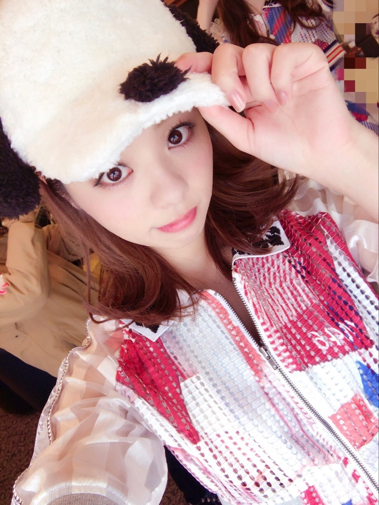
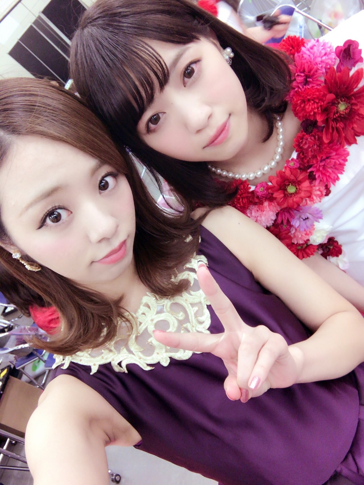
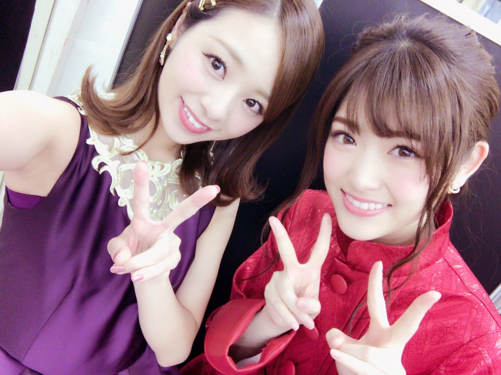
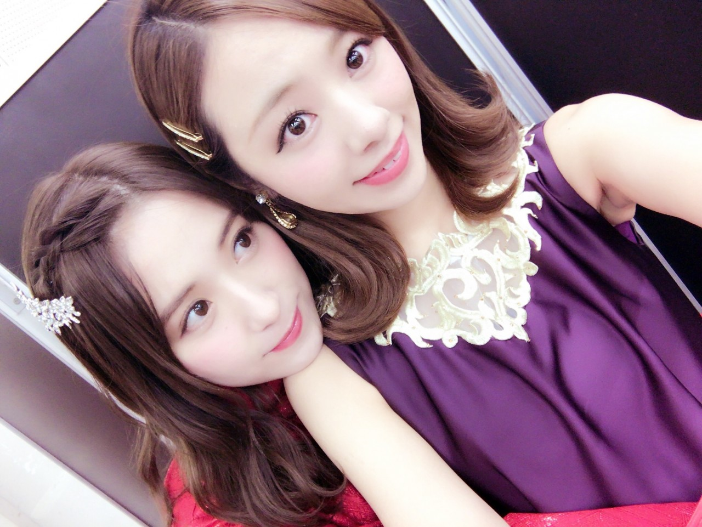
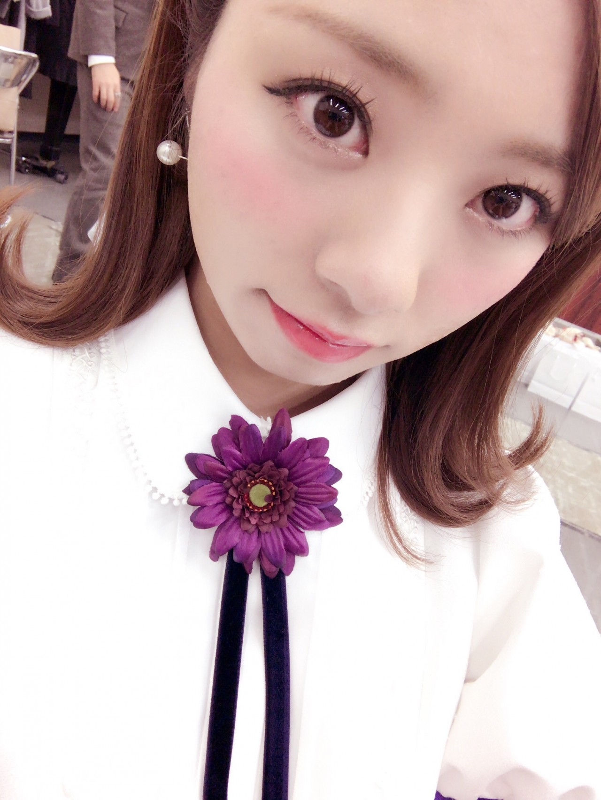

happy new year♡
川村まひろです．

年始早々、USJでライブ‼︎
めちゃくちゃ最高‼︎★
メンバー皆がUSJを楽しんでる姿を見て何故かかなり嬉しくなる。。笑
地元だからだね...
もうアトラクションには感動の連鎖‼︎‼︎本当に体験しないと分からないと思う，文字だけで表現できる自信はない♪
「文字で表現してや！」って方は，多分，若月とかの方が語彙力あるから。
、、、あっ！！！
今『うんうん。』って納得したやろー⁈笑笑笑
でさこれが，2017年1回目のblogとなるんだけど色々語るべきなのかな？？
まぁその前に...紅白歌合戦，衣装がとっても綺麗だったよね♡
あ、聞いて、皆さん、
絢香さんに挨拶できませんでした(*´-`)/
絢香さんにそう簡単にお会いできると思うのは間違いだぁ。
とりあえずさ，メンバーとの写真載せますよ♡♡
七瀬．

さゆりん．

大阪コンビからの～
大分！みさ．

皆可愛い．らぶぅ．
そして、
2016年はありがとうございました‼︎
本当に幸せな1年だったなぁ..
メンバーやスタッフさんの愛も感じ，沢山の出会いがあり，山あり谷ありでめちゃくちゃ凸凹道走ってたけど，ゴールする度にめちゃくちゃ気持ちよかったなぁ..
さあ～ 今年はどんなかな？
どんどん私を追い詰めて～♡笑
その度に泣くけど笑顔にもなるから。
もちろんギターも引き続きするし、ソロでも乃木團でも沢山やっていきたい！
何か自分の中で思いついたら，それを提供して実現もしたいしね．
それに1番は歌だなぁ...
乃木坂46としても，川村まひろとしても変わりまーす♡
